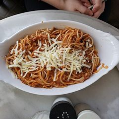

きょうの献立 ＞ 作り方一覧 ＞ 洋食 ＞ ミートソーススパゲッティ
ミートソーススパゲッティの作り方
主菜洋食30分2人分
ミートソーススパゲッティの材料と作り方（2人分）です。洋食の主菜で、調理時間の目安は30分。主な食材はひき肉・玉ねぎ・にんじん・トマトです。

写真：Andy Li（CC0）・イメージ
材料（2人分）
- スパゲッティ 200g
- 合いびき肉 150g
- 玉ねぎ 1/2個
- にんじん 1/4本
- トマト 2個（カットトマト缶1缶でも）
- ケチャップ 大さじ2
- ウスターソース 大さじ1
- コンソメ 小さじ1
- オリーブ油 大さじ1
- 塩こしょう 少々
作り方
- 玉ねぎとにんじんをみじん切り、トマトをざく切りにする。
- オリーブ油で玉ねぎとにんじんを炒め、ひき肉を加えて炒める。
- トマト・ケチャップ・ソース・コンソメを加え、ときどき混ぜながら15分煮詰めて塩こしょうをする。
- 表示どおりゆでたパスタにかける。
献立君のコツ 多めに作って冷凍しておくと便利だよ。
冷蔵庫の食材から、今日の献立を決める →気温で決める「献立ルーレット」→